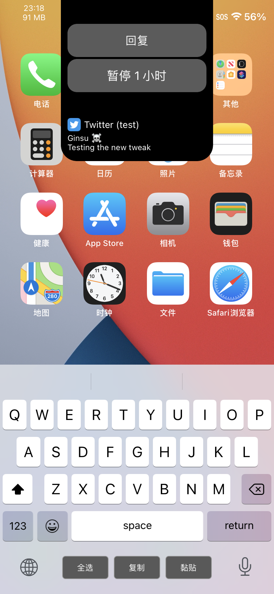
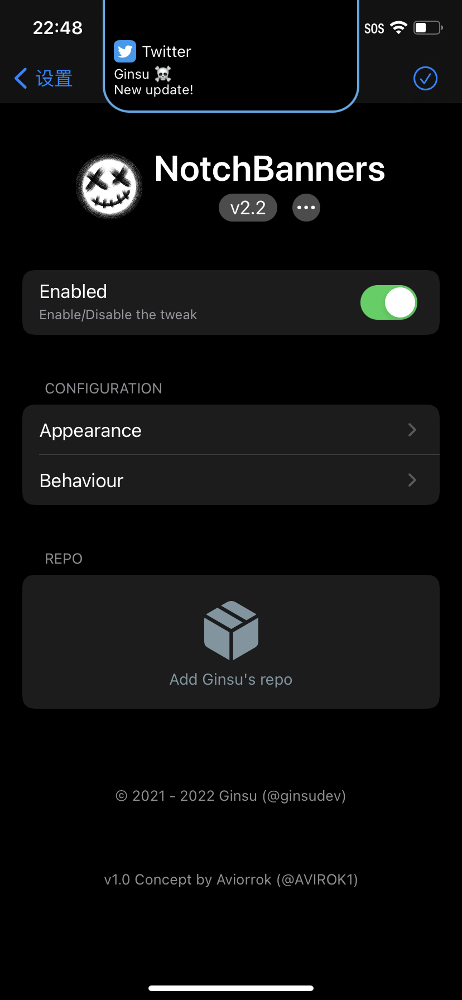
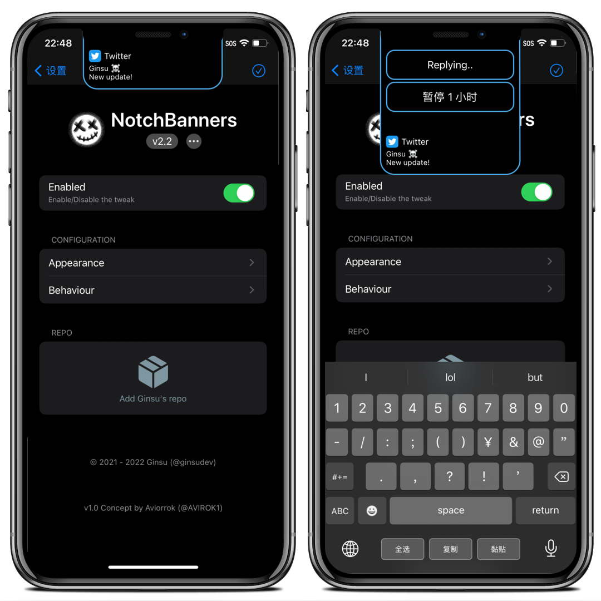
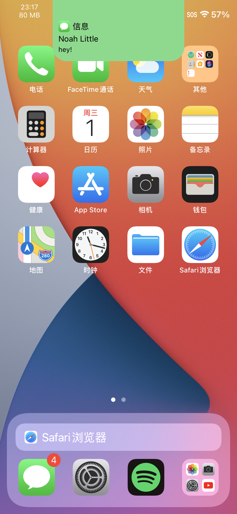
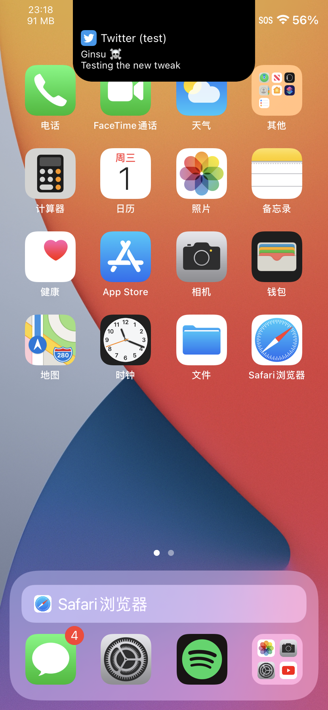

Compatibility: This package is compatible with iOS iOS 14.0 to 15.9.

Give your notch some purpose! NotchBanners transforms the appearance of notification banners by making them drop down below the notch, as if they were part of the notch itself.
Features:
- A banner design that integrates with the device's notch.
- Custom colour support
- More coming..
This tweak should also support non-notched devices, although they don't have a notch. :)
iOS 14+
Contact
Information
Compatibility
iOS 14.0 to 15.9
View Source Code
2.2.2
- Improved some code behind the action buttons. They now conform to a protocol.
2.2.1
- Fix corner radius not changing smoothly when swiping the banner down/up.
2.2
- Fixed a bug where the banner wouldn't dismiss properly when using gestures to dismiss.
- Added an option to adjust the border thickness for both the banner and buttons, independently.
- Added an option to only show the border banner in dark mode.
- Added an option to adjust the notification button heights.
- Improved swipe gestures: You need to swipe down 1/2 of the screen's height to dismiss and 1/3-ish to expand.
- Fixed an issue where the banner might become unresponsive after rotating the device.
- Dynamic specifiers can now depend on more than one other specifier's value to show/hide.
- Added an option to use adaptive colours for the borders.
- Added options to adjust the alpha of the border colour and background colour when in adaptive mode.
- Added options to modify the button and banner radius